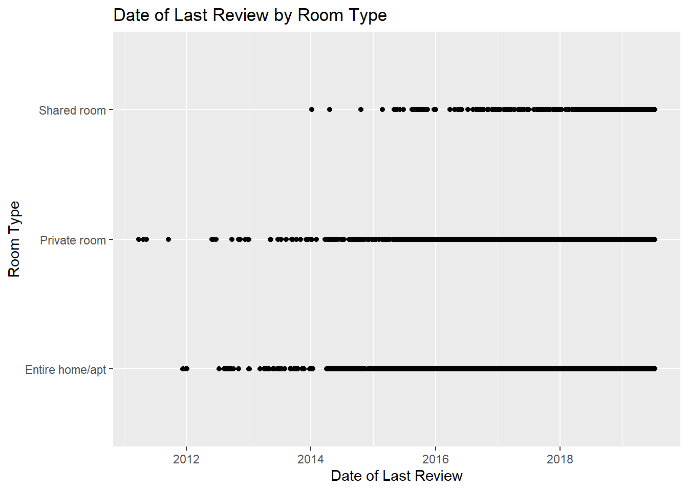
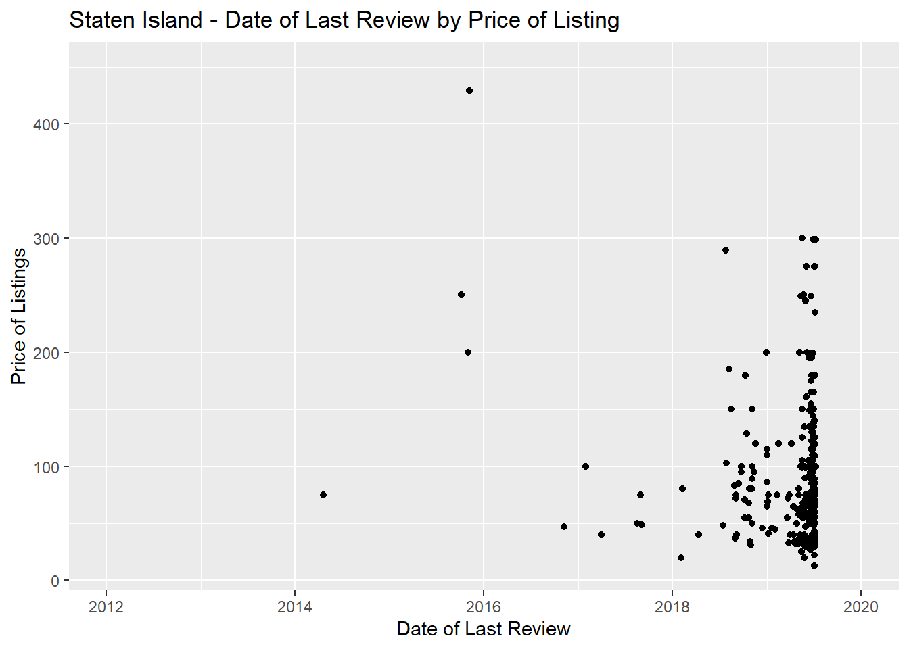
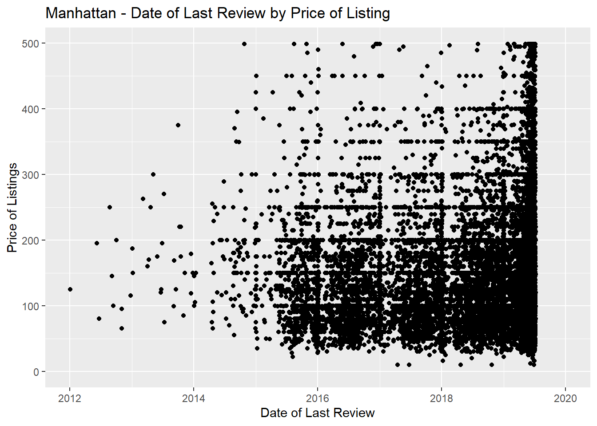
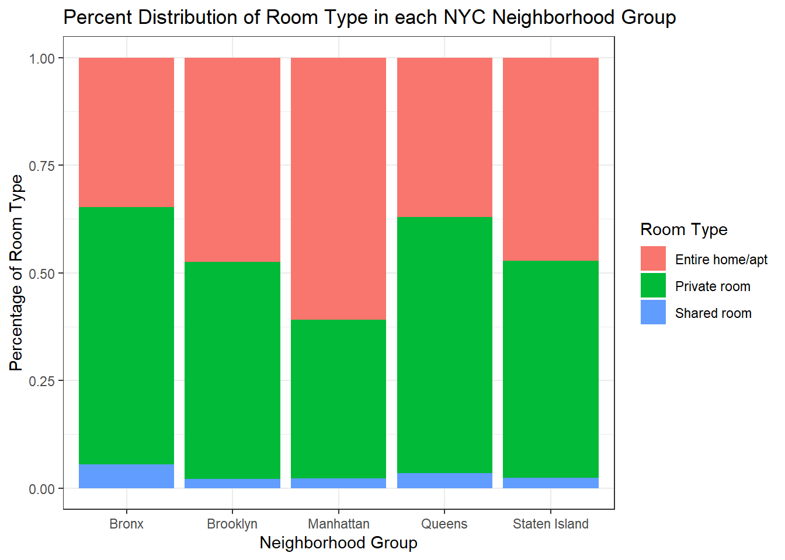

Code
library(tidyverse)
library(ggplot2)
library(summarytools)
library(lubridate)
knitr::opts_chunk$set(echo = TRUE, warning=FALSE, message=FALSE)library(tidyverse)
library(ggplot2)
library(summarytools)
library(lubridate)
knitr::opts_chunk$set(echo = TRUE, warning=FALSE, message=FALSE)This dataset shows AirBnB listings in NYC in 2019 with 48,895 rows (listings) and 17 columns (data for each listing). We see different types of observations including NYC neighborhood and neighborhood group, type of rental (entire home, private room, shared room), their prices, the minimum required number of nights, and number of guest reviews. Additionally we can see how many listing each host has on AirBnB, how many days a listing was available throughout 2019, and the date of the last guest review.
I chose not to pivot this data because each listing was unique, even if a host had different listings, each had different price points, neighborhoods, room types, and names.
mydata <- read.csv("_data/AB_NYC_2019.csv", na.strings=c('',' ',' '))
tibble(mydata, 10)# A tibble: 48,895 × 17
id name host_id host_…¹ neigh…² neigh…³ latit…⁴ longi…⁵ room_…⁶ price
<int> <chr> <int> <chr> <chr> <chr> <dbl> <dbl> <chr> <int>
1 2539 "Clean &… 2787 John Brookl… Kensin… 40.6 -74.0 Privat… 149
2 2595 "Skylit … 2845 Jennif… Manhat… Midtown 40.8 -74.0 Entire… 225
3 3647 "THE VIL… 4632 Elisab… Manhat… Harlem 40.8 -73.9 Privat… 150
4 3831 "Cozy En… 4869 LisaRo… Brookl… Clinto… 40.7 -74.0 Entire… 89
5 5022 "Entire … 7192 Laura Manhat… East H… 40.8 -73.9 Entire… 80
6 5099 "Large C… 7322 Chris Manhat… Murray… 40.7 -74.0 Entire… 200
7 5121 "BlissAr… 7356 Garon Brookl… Bedfor… 40.7 -74.0 Privat… 60
8 5178 "Large F… 8967 Shunic… Manhat… Hell's… 40.8 -74.0 Privat… 79
9 5203 "Cozy Cl… 7490 MaryEl… Manhat… Upper … 40.8 -74.0 Privat… 79
10 5238 "Cute & … 7549 Ben Manhat… Chinat… 40.7 -74.0 Entire… 150
# … with 48,885 more rows, 7 more variables: minimum_nights <int>,
# number_of_reviews <int>, last_review <chr>, reviews_per_month <dbl>,
# calculated_host_listings_count <int>, availability_365 <int>, `10` <dbl>,
# and abbreviated variable names ¹host_name, ²neighbourhood_group,
# ³neighbourhood, ⁴latitude, ⁵longitude, ⁶room_typeThe different data points for each listing:
colnames(mydata) [1] "id" "name"
[3] "host_id" "host_name"
[5] "neighbourhood_group" "neighbourhood"
[7] "latitude" "longitude"
[9] "room_type" "price"
[11] "minimum_nights" "number_of_reviews"
[13] "last_review" "reviews_per_month"
[15] "calculated_host_listings_count" "availability_365" The date was originally characters, I used transform and as.date to mutate last_review into date format.
mydata <- transform(mydata, last_review=as.Date(last_review))
str(mydata)'data.frame': 48895 obs. of 16 variables:
$ id : int 2539 2595 3647 3831 5022 5099 5121 5178 5203 5238 ...
$ name : chr "Clean & quiet apt home by the park" "Skylit Midtown Castle" "THE VILLAGE OF HARLEM....NEW YORK !" "Cozy Entire Floor of Brownstone" ...
$ host_id : int 2787 2845 4632 4869 7192 7322 7356 8967 7490 7549 ...
$ host_name : chr "John" "Jennifer" "Elisabeth" "LisaRoxanne" ...
$ neighbourhood_group : chr "Brooklyn" "Manhattan" "Manhattan" "Brooklyn" ...
$ neighbourhood : chr "Kensington" "Midtown" "Harlem" "Clinton Hill" ...
$ latitude : num 40.6 40.8 40.8 40.7 40.8 ...
$ longitude : num -74 -74 -73.9 -74 -73.9 ...
$ room_type : chr "Private room" "Entire home/apt" "Private room" "Entire home/apt" ...
$ price : int 149 225 150 89 80 200 60 79 79 150 ...
$ minimum_nights : int 1 1 3 1 10 3 45 2 2 1 ...
$ number_of_reviews : int 9 45 0 270 9 74 49 430 118 160 ...
$ last_review : Date, format: "2018-10-19" "2019-05-21" ...
$ reviews_per_month : num 0.21 0.38 NA 4.64 0.1 0.59 0.4 3.47 0.99 1.33 ...
$ calculated_host_listings_count: int 6 2 1 1 1 1 1 1 1 4 ...
$ availability_365 : int 365 355 365 194 0 129 0 220 0 188 ...This is the hard part. I’m not exactly sure what to show here, but I got this far so I won’t give up!
#1 There has gotta be something wrong with these outliers. Who is staying for more than 200 days?
ggplot(mydata, aes(x=`last_review`, y=`minimum_nights`)) + geom_point() +
labs(title = "Date of Last Review by Minimum Nights Stay", x = "Date of Last Review", y = "Minimum Required Nights Stay") 
#2 I am just going to making some assumptions here… Those folks who had their entire home/apt for rent and had last reviews in 2012-2014 probably sold their homes. These may have been some of those early starters who were buying up real estate and saw this as a great source of income before they were able to sell and move on to other ventures.
ggplot(mydata, aes(x=`last_review`, y=`room_type`)) + geom_point() +
labs(title = "Date of Last Review by Room Type", x = "Date of Last Review", y = "Room Type") 
#3 I filtered here for Staten Island, just for fun, and set the listing price to less than $500. Most of the last reviews here are in 2019.
mydata%>%
filter(neighbourhood_group == "Staten Island", price < 500) %>%
ggplot(aes(x=last_review, y=price)) +
geom_point() + scale_x_date(date_labels = "%Y %m %d") +
xlab("") + scale_x_date(limits = as.Date(c("2012-01-01", "2020-01-01"))) +
labs(title = "Staten Island - Date of Last Review by Price of Listing", x = "Date of Last Review", y = "Price of Listings") 
#4 Here’s a comparasson - Manhattan has last reviews all over the place.
mydata%>%
filter(neighbourhood_group == "Manhattan", price < 500) %>%
ggplot(aes(x=last_review, y=price)) +
geom_point() + scale_x_date(date_labels = "%Y %m %d") +
xlab("") + scale_x_date(limits = as.Date(c("2012-01-01", "2020-01-01"))) +
labs(title = "Manhattan - Date of Last Review by Price of Listing", x = "Date of Last Review", y = "Price of Listings") 
#5 I’m not exactly sure what to make of this graph. But I wanted to make it so here it is!
mydata%>%
filter(last_review > "2019-01-01") %>%
ggplot(aes(x=last_review, y=price, fill=neighbourhood_group)) +
geom_area() + ylim(0, 500) +
labs(title = "2019 Neighborhood Group Data by date of last review and price", x = "Date of Last Review", y = "Price of Listings", fill = "Neighborhood Group") 
#1 I chose this date to show the distribution of room type across Neighborhood Groups.
ggplot(mydata, aes(neighbourhood_group, fill = room_type)) +
geom_bar(position="fill", stat = "count") +
labs(title = "Percent Distribution of Room Type in each NYC Neighborhood Group", x = "Neighborhood Group", y = "Percentage of Room Type") +
scale_fill_discrete(name = "Room Type") +
theme_bw() 